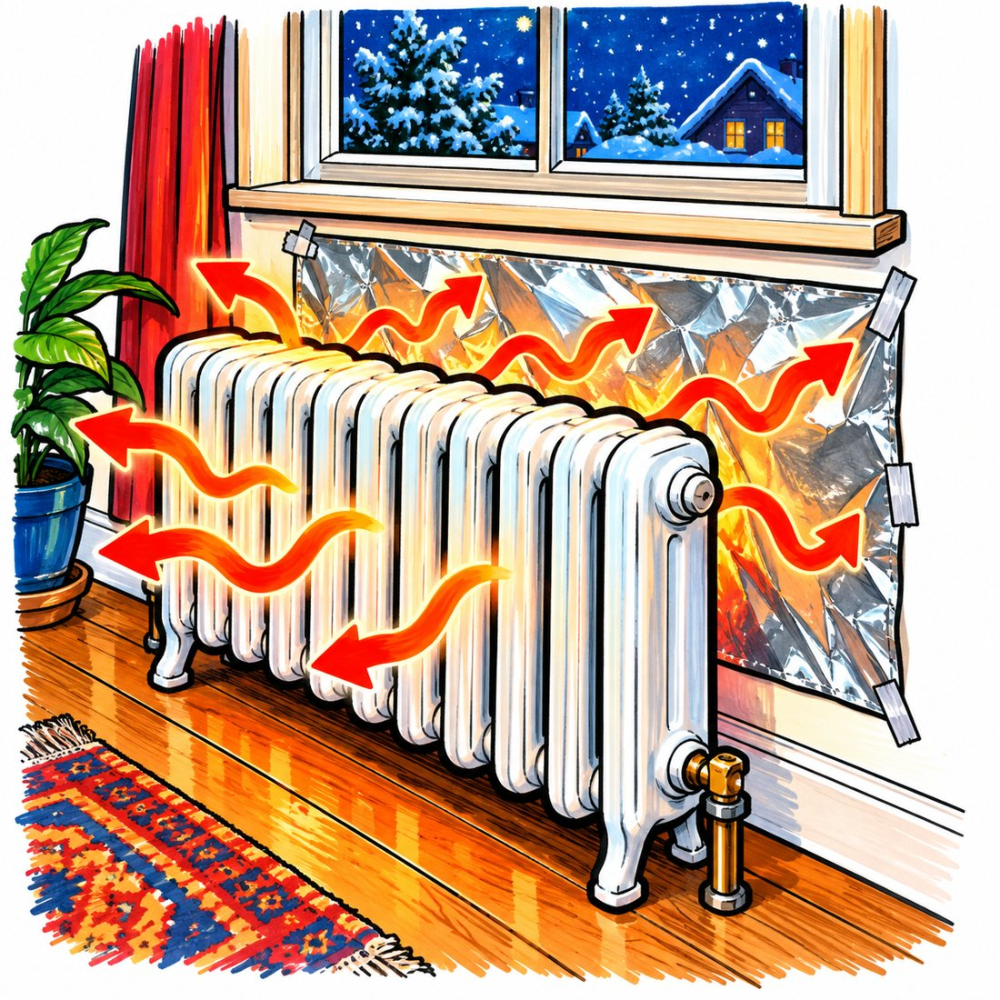
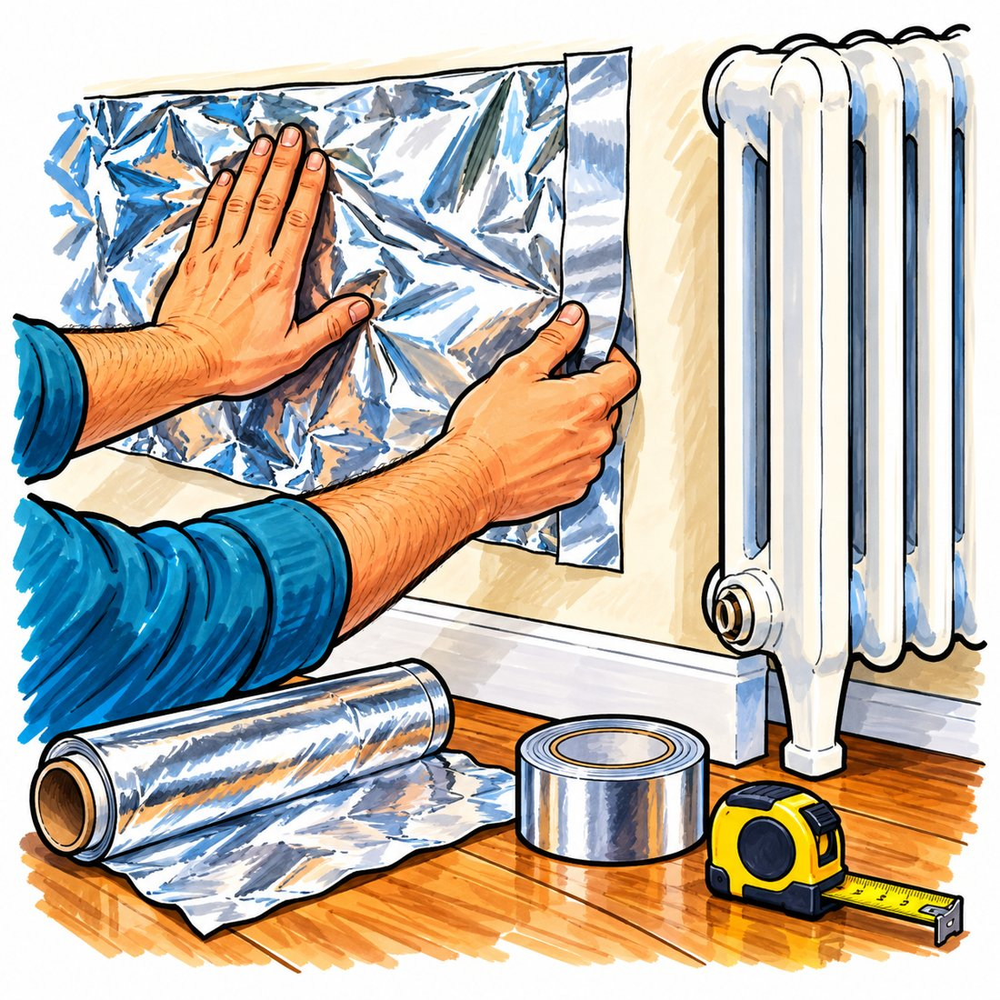
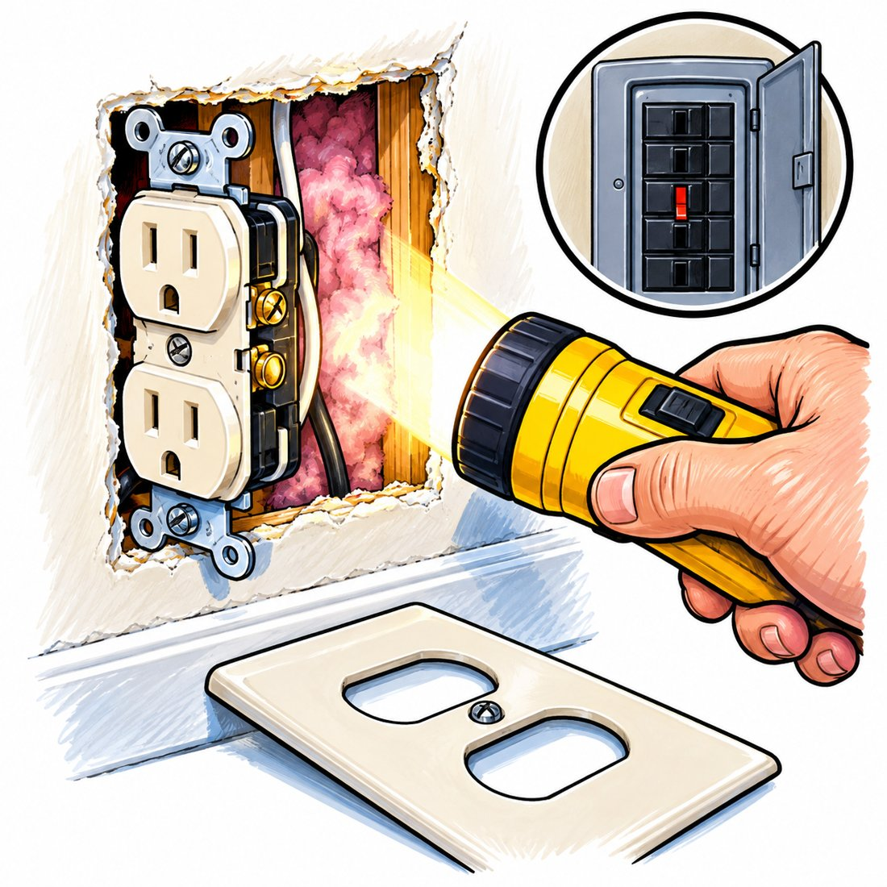

Buy a 50 square foot roll of heavy duty aluminum foil. Tape a sheet flat to the wall behind each radiator on an outside wall, facing the radiator across the air gap. In a university test, one plain sheet of kitchen foil cut the heat leaking through the wall behind the radiator by more than half.
The patch by the radiator is warm, sometimes hot. The wall beside it is room temperature. Same plaster, same studs, same cold night outside.

Most of that heat comes back into the room. A slice soaks through the plaster and framing and leaks out through the siding. How big a slice depends on what is inside the wall. See the flashlight test on page 3.
Emissivity is how strongly a surface gives off infrared, on a scale from 0 to 1. A painted wall sits near 0.9. Bright aluminum foil sits near 0.03. A surface that barely gives off infrared also barely absorbs it, so foil reflects roughly 97 percent of the infrared that hits it. The plaster behind it runs cooler, and a cooler inside face drives less heat out through the wall. Same reason a vacuum flask is silvered inside.
Infrared has to cross empty space to be reflected. Foil pressed between two solid layers just passes heat through by contact, so foil board glued face down onto plaster does almost nothing. Your radiator already gives you the air space: panel radiators hang an inch or two off the plaster, and old cast iron radiators on legs usually sit 2 to 4 inches out.

Do not wrap foil around the pipes or the valve. Do not cover the top of the radiator, and do not let foil hang down and block the gap at the floor. A radiator pulls cool air in at the bottom and pushes warm air out the top. Choke that path, and you lose more heat than the foil saves.
Run a duster wand or a vacuum brush down the gap. Dust absorbs far more infrared than clean foil. Tarnish matters less: bare aluminum creeps from about 3 percent emissivity to about 8 to 12 percent, then levels off, and still reflects close to 90 percent.

About 9 million American homes heat with a hot water or steam boiler, most built decades ago. A Pacific Northwest National Laboratory study found up to 43 percent of homes built before 1992 have little or no wall insulation. Britain's Building Research Establishment found the gain is minimal on a wall with filled cavities.
At about 17 dollars, the job pays for itself the first winter on an oil heated house, and usually within a winter or two on gas.
Blowing loose insulation into the walls runs about 1 to 2 dollars a square foot installed, somewhere between 2,000 and 8,000 dollars for a whole house. It fixes the entire wall and is the right long term answer. The foil is what you can do this weekend.